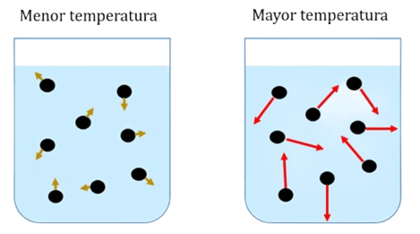

Conceptos Básicos
La temperatura es una medida de la energía cinética promedio de las partículas de un sistema. Es decir, indica qué tan rápido se están moviendo las moléculas en una sustancia. Se le mide con un aparato llamado termómetro.
¿Qué es un termómetro?
Un termómetro es un dispositivo utilizado para medir la temperatura. Existen diferentes tipos de termómetros que se utilizan en diversas aplicaciones, desde la medicina hasta la meteorología.
Tipos de Termómetros:
- Termómetro de mercurio
- Termómetro digital
- Termómetro infrarrojo
- Termómetro bimetálico
Esto significa que a mayor movimiento de partículas mayor temperatura y viceversa.

 Video Educativo
Video Educativo
Este video educativo permitirá comprender qué es la temperatura, su significado y cómo se mide. Dado que, se presenta de manera clara y sencilla, explicando conceptos fundamentales para entender este fenómeno físico que está presente en nuestra vida diaria.